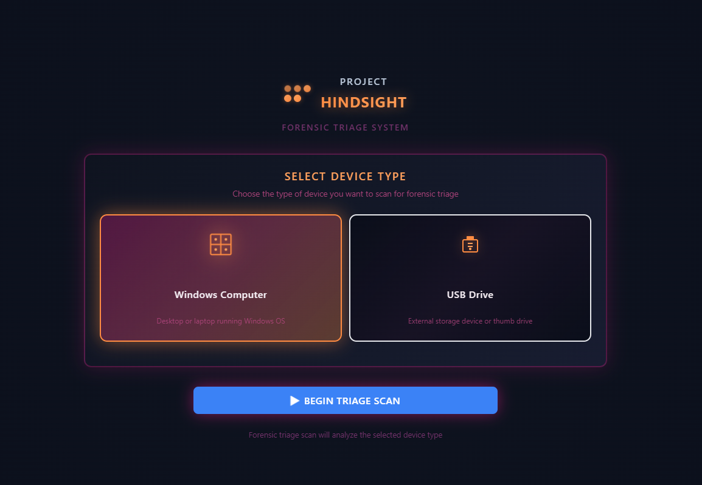
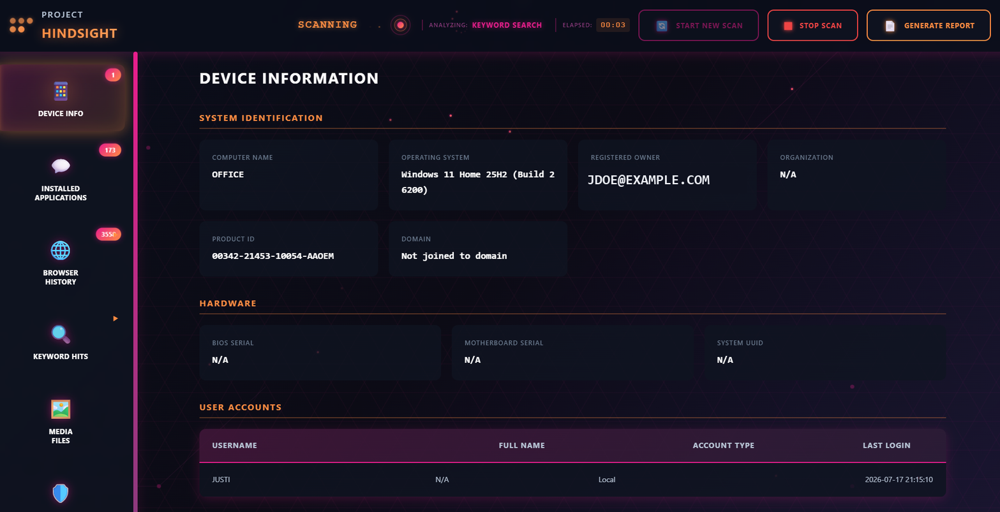
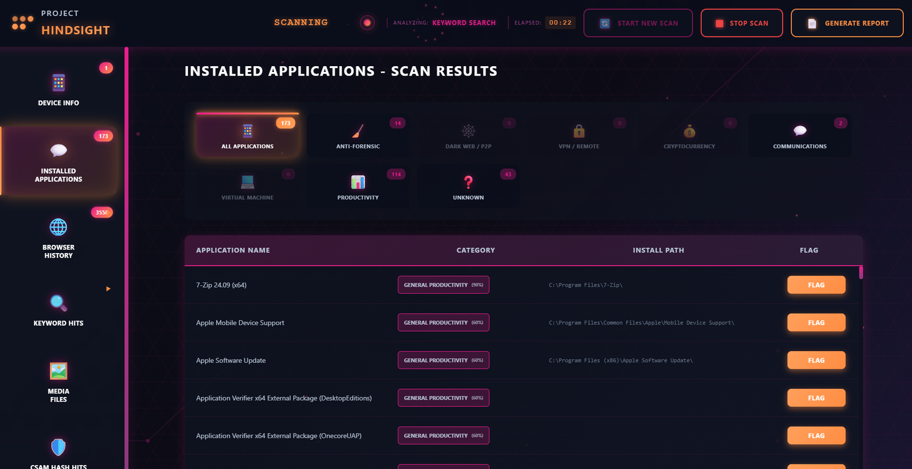
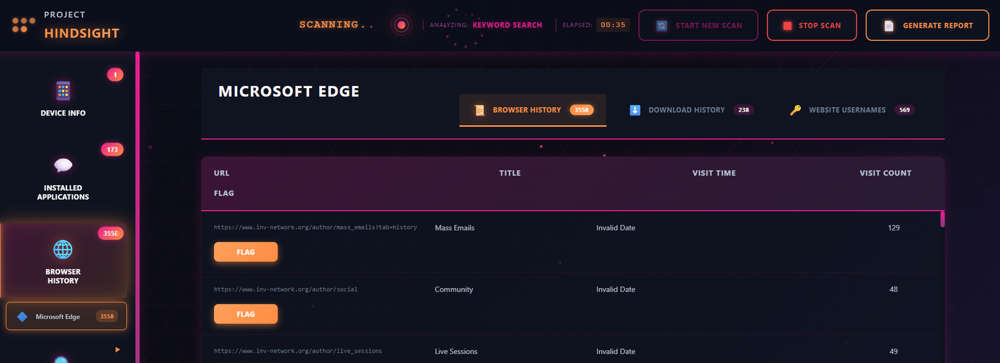
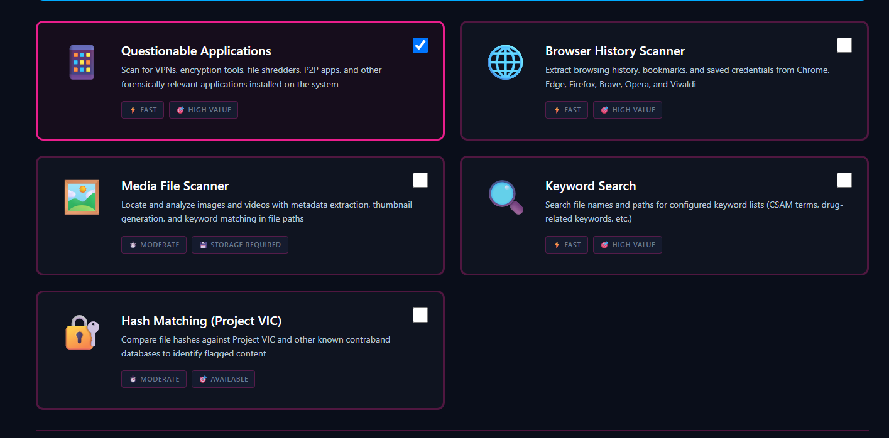

Near-instant insight
Triage a Windows computer or USB drive and surface the details that matter in minutes — not hours.
Intellect LE Platform · Digital Forensic Triage
Rapid forensic triage of Windows computers and USB drives — built for officers supervising registered sex offenders.
Windows & USB · Keyword & CSAM hash search · Free to SOMS attendees

Officers supervising registered sex offenders face a very real problem: how do you rapidly search and verify electronic devices for signs of contraband?
Free tools — while capable and proven — are often slow, inconsistent in training availability, and difficult for new officers to adopt. Paid tools, though powerful, keep rising in cost and rarely scale; most agencies can't afford to equip every member of a unit, forcing officers to share licenses. That becomes a major operational issue when multiple devices are encountered at a single location.
Hindsight eliminates these barriers — engineered to quickly triage Windows computers and Windows-based USB drives and deliver near-instant insight into what's on a device.
Triage a Windows computer or USB drive and surface the details that matter in minutes — not hours.
Free to equip your entire unit. Handle multiple devices at a single scene without waiting on a seat.
A clear, guided workflow means even newer officers can run a defensible triage with confidence.
Establish identity and ownership the moment a scan starts — critical context for any report.

Automatically categorize installed software so forensically relevant apps rise to the top.

Pull browsing activity and account artifacts across every major browser in one place.

Run focused searches for the terms and known files that matter to your investigation.

Windows computer or USB drive.
Pick only the scans you need.
Results populate in real time.
Device info, apps, history, and hits.
Mark items of interest as you go.
Export a clean, defensible summary.
Officers supervising registered sex offenders in the field.
Supervising officers who need fast device checks during visits.
Teams triaging for known contraband and keyword hits.
Departments that can't afford a paid forensic seat per officer.
Anyone who needs an approachable, guided triage workflow.
Triage devices in minutes at the scene.
No shared licenses, no per-seat cost.
Handle several devices at a single location.
Clean, exportable summaries that hold up.
Guided workflow new officers can run.
Free to SOMS attendees — no ongoing fees.
Hindsight is provided free of charge to all attendees of the Sex Offender Management Symposium. Attend, and take it home for your agency.
Learn more at somsymposium.com